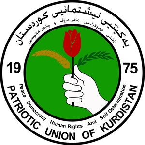

پێشنیازی پڕۆژە
کۆڕبەندی نێودەوڵەتیی وەرزشلە سلێمانی
Sulaimani International Sports Forumڕووداوێکی ساڵانەی یەکڕۆژە بۆ داهێنان، هاوبەشیی نێودەوڵەتی و پێشخستنی کەرتی وەرزش لە کوردستان.
کۆڕبەندی نێودەوڵەتیی وەرزش لە سلێمانیپێشەکی و ناونیشان
١پێشەکی و ناونیشان
ڕێکخستنی «کۆڕبەندی نێودەوڵەتیی وەرزش لە سلێمانی»، کە ڕووداوێکی ساڵانەی یەکڕۆژەیە هاوشێوەی کۆڕبەندە نێودەوڵەتییە گەورەکان (وەک کۆڕبەندی دێلفی)، بە پشتیوانی و ئامادەبوونی کاک قوباد تاڵەبانی، بەرپرسانی باڵای وەرزشی، نوێنەرانی وەرزشیی چەندین وڵات، و خاوەن پڕۆژە و گەنجانی داهێنەر.
ناسنامەی کۆڕبەند
- ناونیشان
- کۆڕبەندی نێودەوڵەتیی وەرزش لە سلێمانی — Sulaimani International Sports Forum
- ماوە
- یەک ڕۆژ، هەموو ساڵێک
- شوێن
- شاری سلێمانی — هەرێمی کوردستان
- ڕێکخەر
- بۆردی وەرزشی یەکێتیی نیشتمانیی کوردستان
- ئامادەبووان
- کاک قوباد تاڵەبانی، بەرپرسانی باڵای وەرزشی، نوێنەرانی وەرزشیی چەندین وڵات، خاوەن پڕۆژە و گەنجانی داهێنەر
بۆچی سلێمانی؟
سلێمانی مێژوویەکی دەوڵەمەندی وەرزشیی هەیە؛ یانە و تیمەکانی ئەم شارە لە ئاستی ناوخۆیی و نێودەوڵەتیدا ئامادەبوونێکی بەرچاویان هەبووە، و بەتایبەتی وەرزشی کچان بەشدارییەکی شایستەی لە پاڵەوانێتییە ئاسیاییەکاندا کردووە.
کۆمەڵگەیەکی گەنج
شارێکی کراوە و خاوەن وزەی لاوان.
مێژووی وەرزشی
یانە و تیمی خاوەن دەستکەوت لە ناوخۆ و ئاسیا.
ژێرخانی میوانداری
توانای میوانداریکردنی ڕووداوی نێودەوڵەتی.
کۆڕبەندی نێودەوڵەتیی وەرزش لە سلێمانیئامانجەکانی کۆڕبەند
٢ئامانجەکانی کۆڕبەند
٠١
بەستنەوە بە ئاستی نێودەوڵەتی
دروستکردنی پەیوەندی و کاری هاوبەش لەگەڵ وڵاتانی پێشکەوتوو و سوودوەرگرتن لە ئەزموونی ئەوان بۆ وەرزشی سلێمانی و کوردستان.
٠٢
پشتیوانیی گەنجان و خاوەن بیرۆکەکان
ڕەخساندنی دەرفەت بۆ ئەو کەسانەی پڕۆژەی داهێنەرانەیان لە کەرتی وەرزشدا هەیە تا بیرۆکەکانیان بخەنەڕوو.
٠٣
ڕەخساندنی هەلی کار
بەگەڕخستنی پڕۆژە وەرزشییەکان و واژۆکردنی گرێبەستی کاری هاوبەش، کە دەبێتە هۆی دابینکردنی هەلی کاری نوێ بۆ گەنجان.
٠٤
تیشکخستنەسەر وەرزشی ژنان و کچان
خستنەڕووی پێشکەوتنی کچانی وەرزشوانی سلێمانی و دەستکەوتەکانیان لە پاڵەوانێتییە گەورەکاندا، بەتایبەت بەشدارییان لە پاڵەوانێتییەکانی ئاسیادا.
٠٥
واژۆکردنی گرێبەست و کاری هاوبەش
ئەنجامدانی ڕێککەوتننامەی فەرمی لەنێوان وەرزشی کوردستان و وڵاتانی بەشداربوو لە پەراوێزی کۆڕبەندەکەدا.
کۆڕبەندی نێودەوڵەتیی وەرزش لە سلێمانیقۆناغەکانی پڕۆژە
٣قۆناغەکانی پڕۆژەکە
قۆناغی یەکەم — ئامادەکاری و هەڵسەنگاندن (پێش کۆڕبەند)
ئەم قۆناغە چەند مانگێک بەر لە وادەی کۆڕبەندەکە دەست پێدەکات، و ئامانجی دۆزینەوە، هەڵسەنگاندن و پەرەپێدانی باشترین پڕۆژە وەرزشییەکانە بە شێوازێکی زانستی و دادپەروەرانە.
بڵاوکردنەوەی فۆڕمچەند مانگێک بەر لە وادەی کۆڕبەندەکە، فۆڕمی وەرگرتنی پڕۆژە وەرزشییەکان بۆ سەرجەم خاوەن بیرۆکە و گەنجان بڵاودەکرێتەوە.
پێکهێنانی لیژنەی هەڵسەنگاندنلە لایەن بۆردی وەرزشەوە لیژنەیەک بۆ هەڵسەنگاندن و پێداچوونەوەی پڕۆژەکان پێکدەهێنرێت.
پاڵاوتنی سەرەتایی — ٢٠ پڕۆژەلەناو سەرجەم پڕۆژە پێشکەشکراوەکاندا، لیژنەکە باشترین ٢٠ پڕۆژە دەستنیشان دەکات.
پەرەپێدان — دوو مانگلە ماوەی دوو مانگدا، لیژنەکە لەگەڵ خاوەن پڕۆژەکان کار دەکات بۆ دەوڵەمەندکردن و پەرەپێدانی بیرۆکەکانیان بە شێوازێکی تۆکمە و زانستی.
هەڵبژاردنی کۆتایی — ١٠ پڕۆژەلە کۆی ئەم ٢٠ پڕۆژەیە، باشترین ١٠ پڕۆژە دیاری دەکرێن بۆ ئەوەی لە ڕۆژی کۆڕبەندەکەدا بچنە سەر ستەیجی سەرەکی.
کۆڕبەندی نێودەوڵەتیی وەرزش لە سلێمانیلیژنەی هەڵسەنگاندن
لیژنەی هەڵسەنگاندن
لە لایەن بۆردی وەرزشەوە لیژنەیەک بۆ هەڵسەنگاندن و پێداچوونەوەی پڕۆژەکان پێکدەهێنرێت. بۆ نموونە لیژنەکە پێکهاتبێت لەم بەڕێزانەی خوارەوە:
١
بەڕێز هاوکار ڕەشید عەلیئەندامی بۆردی وەرزشی ی.ن.کسەرۆکی لیژنە
٢
بەڕێز د. شنە زاهیر حەکیمئەندامی بۆردی وەرزشی ی.ن.کئەندام
٣
بەڕێز کاک ئەردەڵانئەندامی بۆردی وەرزشی ی.ن.کئەندام
٤
سۆلین عوسمانڕاگەیاندنی بۆردی وەرزشی ی.ن.کئەندام
قیفی پاڵاوتنی پڕۆژەکان
لە فۆڕمی کراوەوە تا سێ پڕۆژەی براوە — هەر قۆناغێک پاڵاوتنێکی زانستییە.
پڕۆژە پێشکەشکراوەکان∞
دوای پاڵاوتنی سەرەتایی20
دوای قۆناغی پەرەپێدان10
براوەکانی ڕۆژی کۆڕبەند3
کۆڕبەندی نێودەوڵەتیی وەرزش لە سلێمانیپێوەر و بەرنامەی پەرەپێدان
پێوەرەکانی هەڵسەنگاندن
بۆ ئەوەی هەڵسەنگاندنەکە دادپەروەرانە و ڕوون بێت، پێشنیاز دەکرێت هەموو پڕۆژەکان بەپێی ئەم پێوەرانەی خوارەوە نمرە وەربگرن.
دابەشبوونی نمرەکان
ڕێژەی هەر پێوەرێک لە کۆی گشتیی نمرەی پڕۆژەکە — پێشنیازی بۆردی وەرزش.
داهێنان و نوێبوونەوەڕادەی تازەیی بیرۆکەکە
25%
توانای جێبەجێکردنواقیعیبوونی پلان و سەرچاوەکان
20%
کاریگەریی کۆمەڵایەتیسوود بۆ گەنجان، کچان و کۆمەڵگە
20%
بەردەوامیتوانای مانەوە و گەشەکردن لە درێژخایەندا
15%
ڕەهەندی ئابووریڕەخساندنی هەلی کار و داهات
10%
پێشکەشکردنڕوونی، پوختی و قەناعەتپێکردن
10%
کۆی گشتی100%
بەرنامەی پەرەپێدان — دوو مانگ
کۆبوونەوەی تایبەت
دیاریکردنی خاڵە بەهێز و لاوازەکانی هەر پڕۆژەیەک.
وۆرکشۆپ
پلاندانان، بودجەڕێژی و بەڕێوەبردنی پڕۆژە.
ڕاهێنان
هونەری پێشکەشکردنی پڕۆژە لە ماوەی ٢ خولەکدا.
ئامادەکاری کۆتایی
نمایشی بیرناو بۆ شاشەی گەورە و پێداچوونەوە.
کۆڕبەندی نێودەوڵەتیی وەرزش لە سلێمانیقۆناغی دووەم: ڕۆژی کۆڕبەند
قۆناغی دووەم — بڕگە و کارنامەی ڕۆژی کۆڕبەند
ڕۆژی کۆڕبەند بە شێوەیەک ڕێکدەخرێت کە گفتوگۆی نێودەوڵەتی، ئەزموونی ناوخۆیی و داهێنانی گەنجان لە یەک سەکۆدا کۆبکاتەوە.
پێشوازی و تۆمارکردنی میوانان
کردنەوەی فەرمی و وتاری بەڕێز کاک قوباد تاڵەبانی
پانێڵی نێودەوڵەتی
پشوو و ناساندنی بەشداربووان بە یەکتری
پانێڵی خۆجێیی: وەرزشی سلێمانی
خستنەڕووی ١٠ پڕۆژەکە لەسەر ستەیج
دەنگدان و هەڵسەنگاندنی کۆتایی
ڕاگەیاندنی براوەکان، بەخشینی خەڵات و واژۆکردنی ڕێککەوتننامەکان
کارنامەکە پێشنیازە و بەپێی ئامادەبوونی میوانە نێودەوڵەتییەکان ڕێک دەخرێتەوە.
بڕگەی ١
پانێڵی نێودەوڵەتی
میوانداریکردنی نوێنەر و بەرپرسانی وەرزشی لە وڵاتانی جیاواز (وەک: کۆریای باشوور، ئەمریکا، هیندستان و هتد)؛ گفتوگۆکردن لەسەر چۆنیەتیی پێشخستنی وەرزش لە وڵاتەکانیان و چۆنیەتیی دروستکردنی پەیوەندی و کاری هاوبەش لەگەڵ وەرزشی کوردستان.
بڕگەی ٢
پانێڵی خۆجێیی — وەرزشی سلێمانی
خستنەڕووی ئەزموونی سەرکەوتووی وەرزشی شارەکە، بەتایبەت پێشخستنی وەرزشی کچان و بەشداریی شایستەیان لە پاڵەوانێتییە ئاسیاییەکاندا.
کۆڕبەندی نێودەوڵەتیی وەرزش لە سلێمانینمایشی پڕۆژەکان و دەنگدان
بڕگەی ٣ — خستنەڕووی پڕۆژەکان لەسەر ستەیج
پڕۆژەی ئەو ١٠ کەسەی هەڵبژێردراون لە ڕێگەی شاشەی گەورەوە نمایش دەکرێن؛ هەر بەشداربوویەک بۆ ماوەی ٢ خولەک بە پوختی باسی پڕۆژەکەی خۆی بۆ ئامادەبووان، کاک قوباد تاڵەبانی، و میوانە نێودەوڵەتییەکان دەکات.
١٠پڕۆژەی هەڵبژێردراو
٢خولەک بۆ هەر پێشکەشکردنێک
٣پڕۆژەی براوە
بڕگەی ٤ — دەنگدان و هەڵبژاردنی براوەکان
بە دەنگدانی لیژنە و کەسایەتییە وەرزشییە ئامادەبووەکان، سێ پڕۆژەی یەکەم دیاری دەکرێن. دەنگدانەکە بە شێوازێکی ڕوون و شەفاف ئەنجام دەدرێت و ئەنجامەکان هەر لە هەمان ڕۆژدا ڕادەگەیەنرێن.
پلەی یەکەمدەخرێتە بواری جێبەجێکردنەوە و پاڵپشتیی تەواوی دارایی و لۆجستیی بۆ دەکرێت.
پلەی دووەم و سێیەمخەڵاتی تایبەت و شایستەیان پێدەبەخشرێت.
پڕۆژەکانی ترلە کۆی ٢٠ پڕۆژەکە، بڕوانامەی ڕێزلێنان و سوپاسنامەیان پێشکەش دەکرێت.
کۆڕبەندی نێودەوڵەتیی وەرزش لە سلێمانیخەڵاتەکان و دەرئەنجام
سێ پڕۆژەی یەکەم
2
پڕۆژەی دووەم
خەڵاتی تایبەت و شایستە
1
پڕۆژەی یەکەم
جێبەجێکردن و پاڵپشتیی تەواوی دارایی و لۆجستی
3
پڕۆژەی سێیەم
خەڵاتی تایبەت و شایستە
خەڵاتەکان تەنها پاداشت نین، بەڵکو پەیامێکن بۆ هەموو گەنجانی کوردستان کە بیرۆکەی باش و کاری جددی دەرفەتی ڕاستەقینەی بۆ دەڕەخسێت.
٤دەرئەنجام و بەردەوامی
- واژۆکردنی گرێبەستلە پەراوێزی کۆڕبەندەکەدا، چەندین گرێبەستی فەرمی و کاری هاوبەش لەنێوان کەرتی وەرزشی ناوخۆ و وڵاتانی بەشداربوو واژۆ دەکرێت.
- هەلی کارلە ڕێگەی جێبەجێکردنی پڕۆژە براوەکان و هاوبەشییە نێودەوڵەتییەکانەوە، هەلی کاری ڕاستەقینە بۆ گەنجان دەڕەخسێت.
- بەردەوامیی کۆڕبەندەکەئەم کۆڕبەندە دەبێتە نەریتێکی فەرمیی ساڵانە و هەموو ساڵێک بۆ ماوەی یەک ڕۆژ ئەنجام دەدرێت.
کۆڕبەندی نێودەوڵەتیی وەرزش لە سلێمانینەخشەی کات و داواکاری کۆتایی
نەخشەی کاتی گشتی
1پێکهێنانی لیژنە و ئامادەکردنی فۆڕم
2بڵاوکردنەوەی فۆڕم و وەرگرتنی پڕۆژەکان
3پاڵاوتن و هەڵبژاردنی ٢٠ پڕۆژە
4پەرەپێدانی پڕۆژەکان — دوو مانگ
5هەڵبژاردنی ١٠ پڕۆژەی کۆتایی
6ڕۆژی کۆڕبەند
7جێبەجێکردنی پڕۆژەی براوە و بەدواداچوون
٥داواکاری و پێشنیازی کۆتایی
بەندە وەک خاوەنی پڕۆژە (سۆلین عوسمان – ڕاگەیاندنی بۆردی وەرزشی ی.ن.ک)، بەوپەڕی دڵسۆزییەوە پێشنیاز دەکەم و تکاکارم لە بەڕێز دکتۆر عەلی تاهیر، لێپرسراوی بەڕێزی بۆردی وەرزشی یەکێتیی نیشتمانیی کوردستان، ڕەزامەندیی بەڕێزتان بفەرموون لەسەر پەسەندکردن و بەڕێوەچوونی «کۆڕبەندی نێودەوڵەتیی وەرزش لە سلێمانی»، بە لەبەرچاوگرتنی گرنگی و کاریگەرییە پۆزەتیڤەکانی ئەم ئیڤێنتە لەسەر کەرتی وەرزش و لاوان لە شارەکەماندا.
ئەم کۆڕبەندە تەنها ڕووداوێکی یەکڕۆژە نییە، بەڵکو وەبەرهێنانێکی درێژخایەنە لە گەنجان و لە داهاتووی وەرزشی کوردستان.
لەگەڵ ڕێز و پێزانیندا..
خاوەنی پڕۆژە
سۆلین عوسمان
ڕاگەیاندنی بۆردی وەرزشی یەکێتیی نیشتمانیی کوردستان (ی.ن.ک)